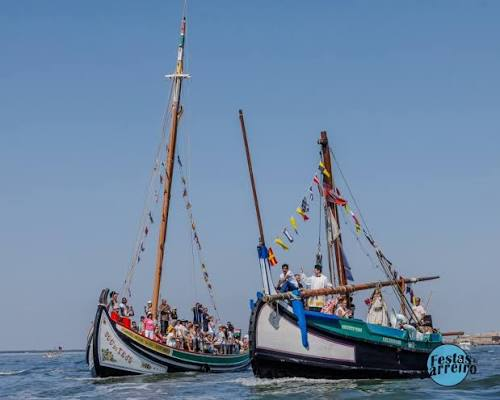
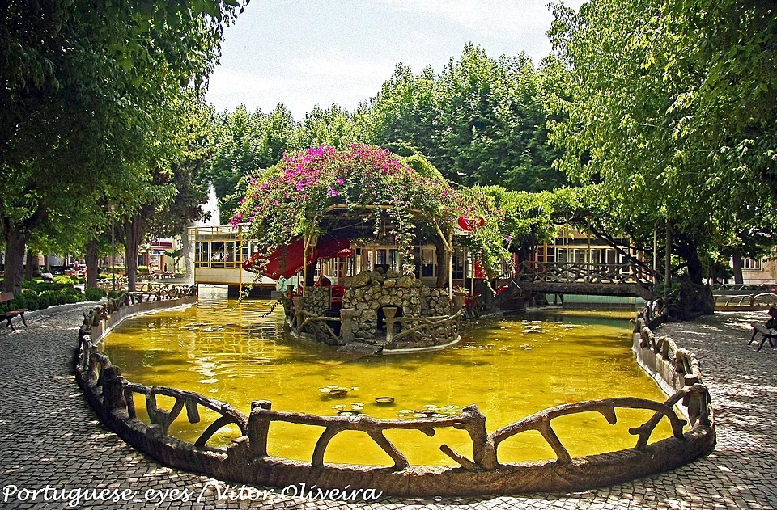
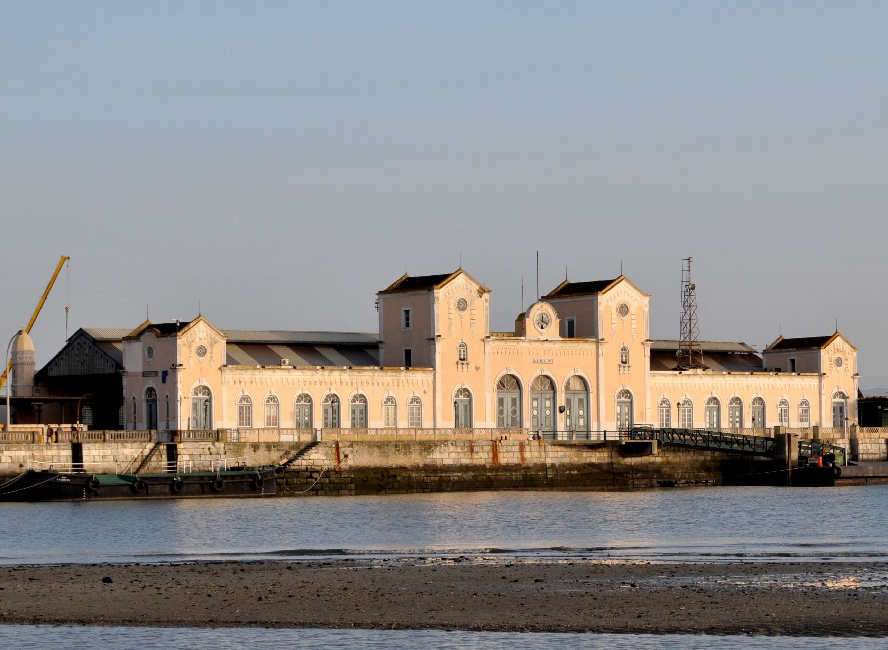
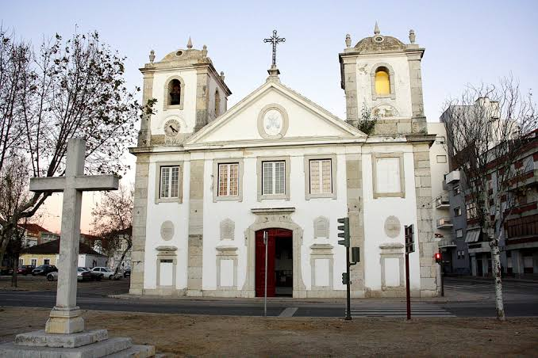
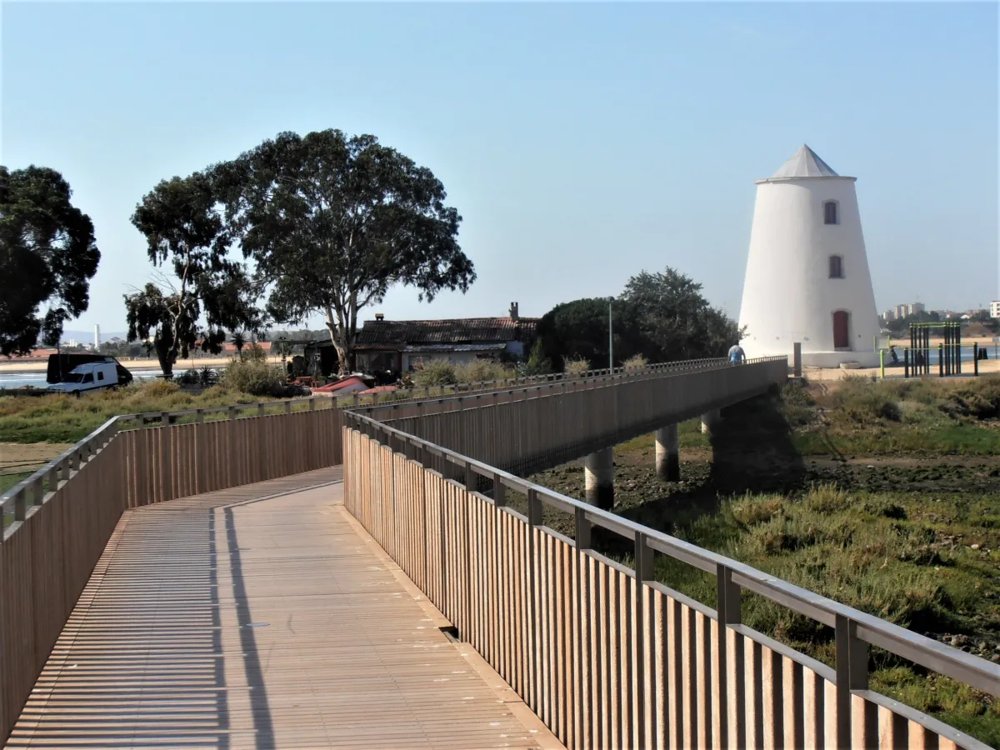
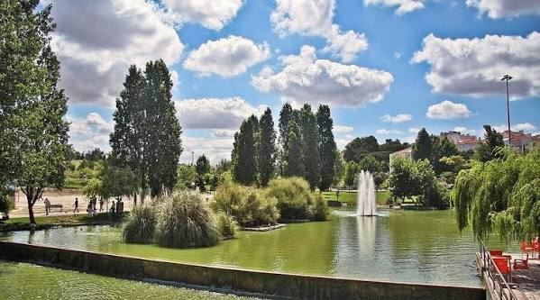
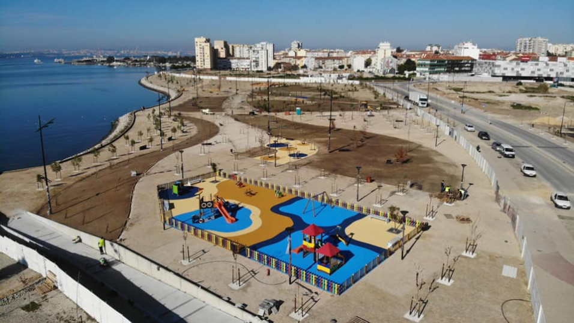
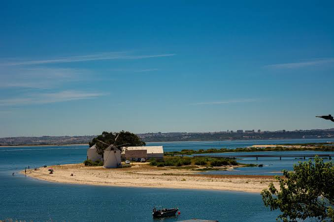

Multimédia
Nesta página encontra conteúdos multimédia.
Fotografias









Video
Dinâmica Fluvial
A serenidade e o movimento das águas do Tejo.
Poema
À beira do Tejo nasceste,
terra de cais e de partida,
onde o ferro se fez memória
e a fábrica se tornou vida.
Nos teus trilhos de comboio
ainda ecoa o labor antigo,
o apito das sirenes,
o suor que era destino.
Cidade de mãos calejadas,
erguida no sal da maré,
és mosaico de gente inteira,
és saudade e és fé.
Das fragatas às oficinas,
dos bairros ao coração,
o Barreiro é um poema vivo,
feito de luta e paixão.
E quando o sol se deita
sobre a pele do rio manso,
é no reflexo dourado
que descubro o teu remanso.
Barreiro, cais da esperança,
terra de voz operária,
tu és raiz e és futuro,
tu és poesia diária.
Património e Identidade
Explore os recantos históricos e a beleza paisagística da região.